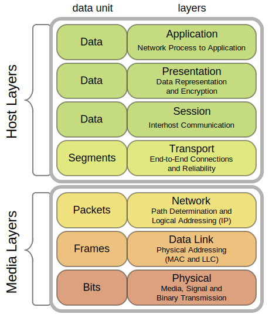
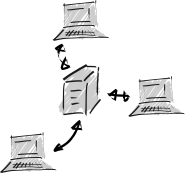

. . .
Esto no está ocurriendo en realidad
Una red son sólo dos o más ordenadores conectados
Para que esto funcione, los nodos de la red tienen conocer el protocolo de comunicación

Figura 1: Las redes y los protocolos ocurren según un modelo de capas
En la capa de transporte, en uno de los estándares (IP) hay un par de protocolos muy relacionados: TCP y UDP
Son alternativas, con ventajas e inconvenientes, para enviar paquetes de datos
En videojuegos se usan ambos (dependiendo de para qué), pero nosotros vamos a usar sólo TCP
Una manera usual y típica de hacer una conexión en red (en nuestro caso, en Internet), es con un modelo cliente-servidor
En un programa (no una máquina) que está siempre ejecutando, y recibe peticiones de conexión de los clientes
Si acepta una conexión, se creará un canal de comunicación bidireccional con ese cliente
El servidor se ejecuta en algún ordenador conectado a una red, y eso le da una dirección única: su dirección IP
Hay varias maneras de asignar la dirección IP a un ordenador (interfaz de red, en realidad)
Puede ser que te asignen una cada vez que te conectes a un route (IP dinámica, puede cambiar en cada reconexión) o que el sistema operativo tenga configurada la IP que quiere (IP estática)
Obviamente, queremos que el servidor tenga una IP estática para que los clientes sepan a quién conectarse
Además, cada programa puede comunicarse, dentro de una misma IP, en un puerto concreto (que es sólo un número)
Es decir, en una misma máquina (IP: 147.96.92.63), podríamos tener:
A veces, podemos tener un nombre para ese ordenador (http://www.ucm.es), pero estos nombres son sólo un "alias" para la dirección IP
Es un programa que:

Figura 2: Arquitectura cliente-servidor
Un sistema simple (como los que vamos a usar), tendría un protocolo como:
Lo que haremos aquí es una versión muy sencilla y funcional (y didáctica) de juegos en red